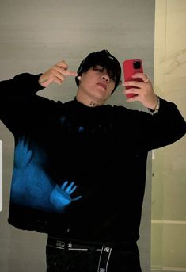
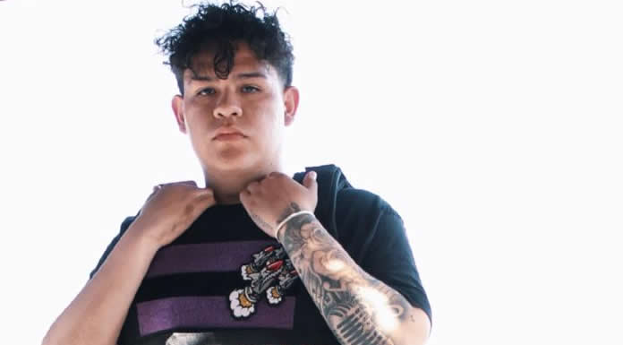

TRAYECTORIA JUNIOR H
SU PRIMER TRAYECTORIA ES:
- ¿Quién es Junior H?
Antonio Herrera Pérez, mejor conocido como Junior H, es cantante de géneros mexicanos. Nació en Guanajuato, México. En el 2020, con tan solo 18 años, comenzó a ganar reconocimiento con su álbum "Atrapado en un sueño". Es el cantante más joven en lograr un top 10 en la lista de los mejores álbumes latinos de Billboard..

- Niñez, Juventud y Vida Familiar de Junior H
Junior H comenzó su hacia el éxito se remonta desde su adolescencia en su ciudad natal Guanajuato, México, donde a los 12 años, él y un amigo escribían música juntos. "No sabíamos cómo tocar ningún instrumento, pero escribiríamos letras", le dice a Billboard..

Inicios de Junior H en la Música
Junior H comenzó su carrera a los 14 años cuando lanzó algunas canciones de hip-hop. Más adelante tuvo que comenzar desde cero cuando su familia se mudó a Utah en Estados Unidos. “Aprendí a tocar la guitarra viendo videos en YouTube. Hasta este día, no conozco las notas musicales, pero sí conozco todos los acordes", admite en una entrevista de Internet.
- EGénero musical de Junior H
Junior H ha interpretado sus canciones en géneros mexicanos como regional urbano y corrido urbano, entre otros.

- rayectoria y Legado de Junior H
Con tan solo 17 años, cuando trabajaba en una sandwichería, Junior H logró que su canción "No eh cambiado" se volviera viral en YouTube. "En dos meses, el video alcanzó dos millones de visitas", dice y agrega que gracias a su clip viral, fue descubierto por su ahora gerente Jimmy Humilde.
“Fui a Los Ángeles, donde vivo actualmente y hablamos. Gracias a Dios, pude lanzar mi primer álbum 'Atrapado en un sueño', bajo el sello discográfico Rancho Humilde". La producción de siete canciones, lanzada el 26 de marzo de 2020, logra calar en todo el público con sus infecciosos corridos tumbados sobre la ambición, el optimismo, la vida en la calle y las relaciones tóxicas, entre otros temas.